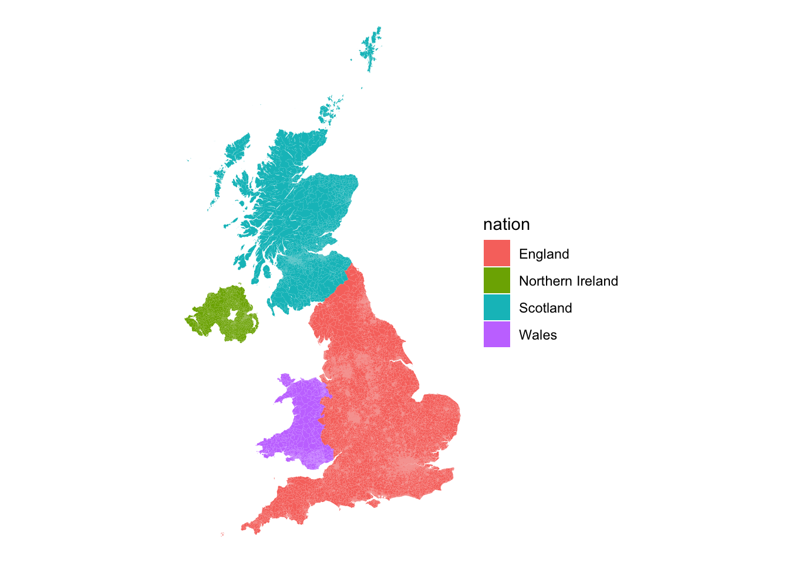
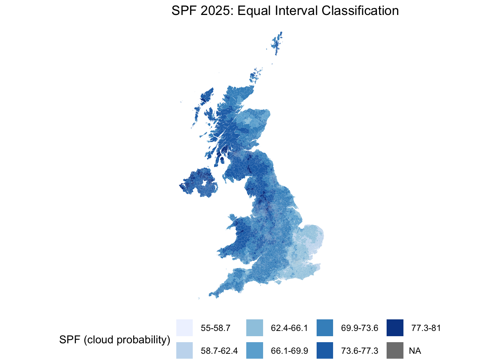
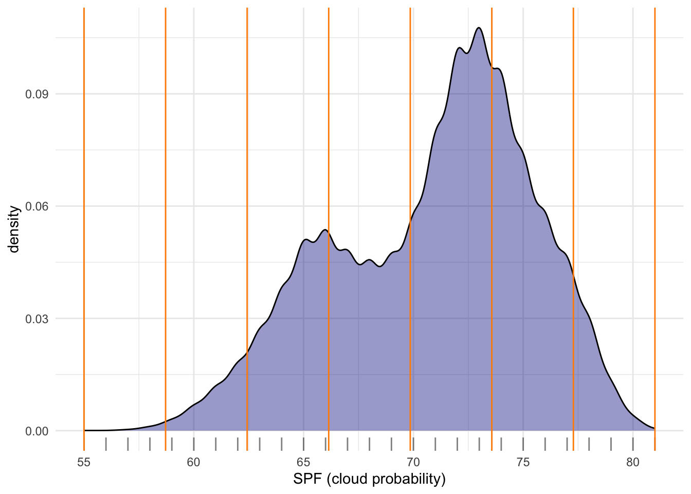
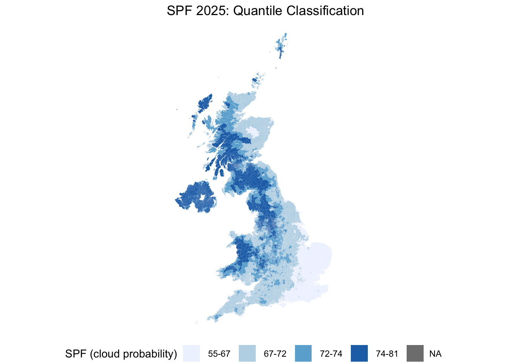
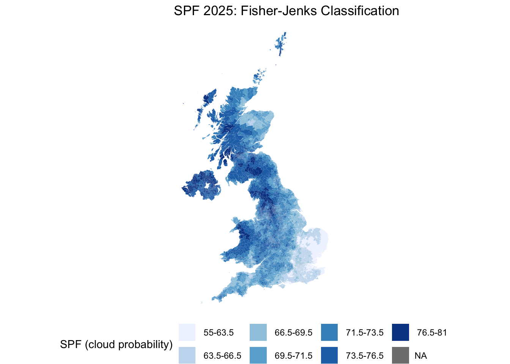
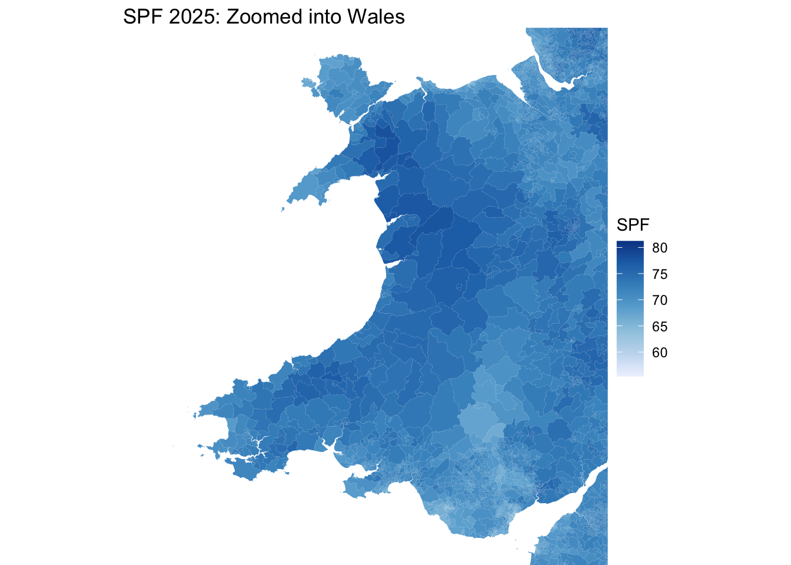
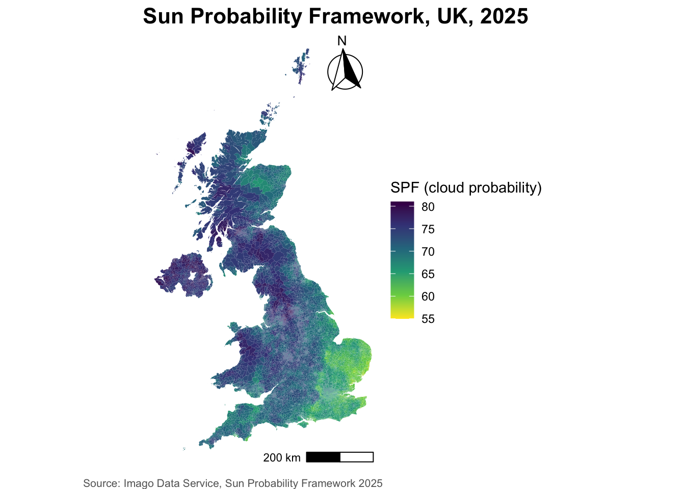

# Load the 'sf' library, which stands for Simple Features, used for working with spatial data.
library(sf)
# Load the 'tidyverse' library, a collection of packages for data manipulation and visualization.
library(tidyverse)
# The 'readr' library provides a fast and user-friendly way to read data from common formats like CSV.
library(readr)
# RColorBrewer library for creating visually appealing color schemes for plots and data visualizations
library(RColorBrewer)
# Working with class intervals and classification methods, esp in the context of spatial data analysis.
library(classInt)Lab in R
Choropleths
In this session, we will build on all we have learnt so far about loading and manipulating (spatial) data and apply it to one of the most commonly used forms of spatial analysis: choropleths. Remember these are maps that display the spatial distribution of a variable encoded in a color scheme, also called palette. Although there are many ways in which you can convert the values of a variable into a specific color, we will focus in this context only on a handful of them, in particular:
Unique values
Equal interval
Quantiles
Fisher-Jenks
Installing Packages
Before all this mapping fun, let us get the importing of libraries and data loading out of the way:
Data
We will be using data from the Imago Data Service for this section — specifically the Sun Probability Framework (SPF), a UK-wide dataset of annual cloud probability estimates for every small area in the country. Higher values mean cloudier conditions (a lower probability of direct sunlight); lower values mean clearer conditions. We’ll be using the 2025 release.
NoteDownload the data
Download the SPF 2025 GeoPackage from the Imago Data Service:
https://data.imago.ac.uk/datasets/cloud-probability-statistics-per-small-area-in-2025-version-2-0
Place it inside a data/ directory. This file already contains both the small-area geometries and the SPF value in one GeoPackage — no separate join needed to get started, and sf reads GeoPackages natively with read_sf().
# A GeoPackage can bundle multiple layers/tables -- check what's actually
# in the file before reading, since read_sf() silently picks the first
# layer if you don't specify one, which may not be the spatial layer
st_layers("data/Imago_spf/Cloud probability statistics per small area in 2025 (GeoPackage).gpkg")Driver: GPKG
Available layers:
layer_name geometry_type features fields crs_name
1 SPF_LSOA_level Multi Polygon 46844 2 OSGB36 / British National Gridspf_25 <- read_sf("data/Imago_spf/Cloud probability statistics per small area in 2025 (GeoPackage).gpkg",
layer = "SPF_LSOA_level") # replace with the actual layer name from st_layers() aboveDon’t forget that before you go further, you want to check the CRS of the sf object as well as the dataframe.
TipAnswer
st_crs(spf_25)Coordinate Reference System:
User input: OSGB36 / British National Grid
wkt:
PROJCRS["OSGB36 / British National Grid",
BASEGEOGCRS["OSGB36",
DATUM["Ordnance Survey of Great Britain 1936",
ELLIPSOID["Airy 1830",6377563.396,299.3249646,
LENGTHUNIT["metre",1]]],
PRIMEM["Greenwich",0,
ANGLEUNIT["degree",0.0174532925199433]],
ID["EPSG",4277]],
CONVERSION["British National Grid",
METHOD["Transverse Mercator",
ID["EPSG",9807]],
PARAMETER["Latitude of natural origin",49,
ANGLEUNIT["degree",0.0174532925199433],
ID["EPSG",8801]],
PARAMETER["Longitude of natural origin",-2,
ANGLEUNIT["degree",0.0174532925199433],
ID["EPSG",8802]],
PARAMETER["Scale factor at natural origin",0.9996012717,
SCALEUNIT["unity",1],
ID["EPSG",8805]],
PARAMETER["False easting",400000,
LENGTHUNIT["metre",1],
ID["EPSG",8806]],
PARAMETER["False northing",-100000,
LENGTHUNIT["metre",1],
ID["EPSG",8807]]],
CS[Cartesian,2],
AXIS["(E)",east,
ORDER[1],
LENGTHUNIT["metre",1]],
AXIS["(N)",north,
ORDER[2],
LENGTHUNIT["metre",1]],
USAGE[
SCOPE["Engineering survey, topographic mapping."],
AREA["United Kingdom (UK) - offshore to boundary of UKCS within 49°45'N to 61°N and 9°W to 2°E; onshore Great Britain (England, Wales and Scotland). Isle of Man onshore."],
BBOX[49.75,-9.01,61.01,2.01]],
ID["EPSG",27700]]head(spf_25)Simple feature collection with 6 features and 2 fields
Geometry type: MULTIPOLYGON
Dimension: XY
Bounding box: xmin: 531948.3 ymin: 180733.9 xmax: 545296.2 ymax: 184700.6
Projected CRS: OSGB36 / British National Grid
# A tibble: 6 × 3
data_zone_code cloud_probability geom
<chr> <dbl> <MULTIPOLYGON [m]>
1 E01000001 65.8 (((532105.3 182010.6, 532162.5 181867.8, 532…
2 E01000002 65.0 (((532634.5 181926, 532619.1 181847.2, 53274…
3 E01000003 68.0 (((532135.1 182198.1, 532158.2 182151.1, 532…
4 E01000005 64.9 (((533808 180767.8, 533649 180733.9, 533602.…
5 E01000006 65.9 (((545122 184314.9, 545271.8 184184.1, 54529…
6 E01000007 65.8 (((544180.3 184700.6, 544317.2 184543.1, 544…The principal variables we’ll use throughout are:
data_zone_code: a unique small-area identifier, harmonised across England, Wales, Scotland and Northern Ireland — the first letter tells you which nation an area belongs to (E= England,W= Wales,S= Scotland,N= Northern Ireland)cloud_probability: the annual average SPF valuegeometry: the small-area boundary
Since our “Unique values” example needs a genuinely categorical variable, and SPF itself is continuous, we’ll derive one from the data_zone_code prefix — which UK nation each small area belongs to:
spf_25 <- spf_25 %>%
mutate(nation = case_when(
str_starts(data_zone_code, "E") ~ "England",
str_starts(data_zone_code, "W") ~ "Wales",
str_starts(data_zone_code, "S") ~ "Scotland",
str_starts(data_zone_code, "N") ~ "Northern Ireland",
TRUE ~ "Unknown"
))Now we are fully ready to map!
We will be using ggplot2 throughout the module — see the documentation here. There are other good options for thematic mapping in R, such as tmap (see here) and mapsf (see here), but we’ll stick to ggplot2 here for consistency with the rest of the course.
Unique values
A choropleth for categorical variables simply assigns a different color to every potential value in the series. Variables could be both nominal or ordinal.
Nominal: Nominal variables represent categories or labels without any inherent order or ranking. The categories are distinct and do not have a natural progression or hierarchy, such as “apple,” “banana,” and “orange” for fruit types.
Ordinal : Ordinal variables represent categories or labels with a meaningful order or ranking. The relative order or hierarchy among the categories is significant, indicating a clear progression from lower to higher values, such as “low,” “medium,” and “high” for satisfaction levels.
In R, creating categorical choropleths is possible with one line of code. To demonstrate this, we can plot which UK nation each small area belongs to (nation, which we derived above). nation is nominal — there’s no inherent ranking between England, Scotland, Wales and Northern Ireland. geom_sf is calling the geometric object and fill is defining what values we want to fill the polygons with.
ggplot(data = spf_25) +
geom_sf(aes(fill = nation), color = NA) +
theme_void()
Equal Interval
If, instead of categorical variables, we want to display the geographical distribution of a continuous phenomenon, we need to select a way to encode each value into a color. One potential solution is applying what is usually called “equal intervals”. The intuition of this method is to split the range of the distribution, the difference between the minimum and maximum value, into equally large segments and to assign a different color to each of them according to a palette that reflects the fact that values are ordered.
Creating the choropleth is relatively straightforward in R. For example, to create an equal interval map of cloud_probability.
First we need to prepare the data, going back to our data wrangling.
spf_filtered <- spf_25 %>%
# Step 1: Filter out rows where 'cloud_probability' is missing (i.e., remove NA values)
filter(!is.na(cloud_probability)) %>%
# Step 2: Round to a whole number for a cleaner legend
mutate(cloud_probability = round(cloud_probability)) Now let’s map using equal intervals.
Mapping in ggplot can be a bit tricky at the beginning. You will want to take a look at the package classInt here.
Step 1: Calculate equal interval breaks with function classIntervals and store them.
e_breaks <- classIntervals(spf_filtered$cloud_probability, n = 7, style = "equal")
# Assign the class breaks to the data
spf_filtered$e_breaks <- cut(spf_filtered$cloud_probability, e_breaks$brks)e_breaks: This is a variable name that you are assigning to store the result of the class intervals calculation.classIntervals(): This is a function that calculates class intervals for a given numeric vector. It is provided by theclassIntpackage.spf_filtered$cloud_probability: This is the data vector that you want to create class intervals for.n = 7: This argument specifies that you want to divide the data into 7 classes.style = "equal": This argument specifies that you want to use equal interval classification, which means that the data range will be divided into equal-sized intervals. These class intervals can be useful for creating data visualizations like choropleth maps or histograms.
Step 2: Finally we can map! as you see a bit of extra work was needed, but you ultimately have more control.
num_bins <- 7
cmap <- brewer.pal(num_bins, "Blues")
ggplot() +
geom_sf(data = spf_filtered, aes(fill = e_breaks), color = NA) +
scale_fill_manual(
values = cmap,
name = "SPF (cloud probability)", # Improved legend title
labels = gsub("[,]", "-", paste0(gsub("[\\[\\]()]", " ", levels(spf_filtered$e_breaks), perl = TRUE))) # Replace comma with hyphen and remove brackets/parentheses from labels
) +
labs(
title = "SPF 2025: Equal Interval Classification",
fill = NULL # Remove the fill label
) +
theme_void() +
theme(legend.position = "bottom")
It is important to understand that equal intervals can first and foremost be visualised on the data distribution. We have already created these intervals with the function classIntervals in Step 1 of the ggplot code above. Here we need a couple of extra steps to collect the break values and plot them in histogram form.
TipClass Interval styles
The function classIntervals has the following styles: “fixed”, “sd”, “equal”, “pretty”, “quantile”, “kmeans”, “hclust”, “bclust”, “fisher”, “jenks”, “dpih”, “headtails”, “maximum”, or “box”.
# Same step as above
e_breaks <- classIntervals(spf_filtered$cloud_probability, n = 7, style = "equal")
spf_filtered$e_breaks <- cut(spf_filtered$cloud_probability, e_breaks$brks)
# Collect the values of the breaks
e_break_values <- e_breaks$brks
# Place the values in a dataframe
e_break_values_df <- data.frame(BreakValues = e_break_values)
# Create a ggplot2 visualization with 'spf_filtered' dataset as the data source
# and 'cloud_probability' as the variable for the x-axis.
ggplot(spf_filtered, aes(x = cloud_probability)) +
# Add a density plot to the visualization with fill color set to dark blue
# and transparency (alpha) set to 0.4.
geom_density(fill = "darkblue", alpha = 0.4) +
# Add a rug plot (small tick marks) along the x-axis with transparency (alpha) set to 0.5.
geom_rug(alpha = 0.5) +
# Add vertical lines to the plot based on the 'e_break_values_df' dataset
# with x-intercepts specified by the 'BreakValues' variable.
# The color of these lines is set to orange.
geom_vline(data = e_break_values_df, aes(xintercept = BreakValues), color = "darkorange") +
# Apply the 'theme_minimal()' theme to the plot for a minimalistic appearance.
theme_minimal() +
# Modify the x-axis label.
labs(x = "SPF (cloud probability)")
Technically speaking, the figure is created by overlaying a KDE plot with vertical bars for each of the break points. This makes much more explicit the issue highlighted by which the middle bins contain a large amount of observations while the ones at either extreme only encompass a handful of them.
Quantiles
One solution to obtain a more balanced classification scheme is using quantiles. This, by definition, assigns the same amount of values to each bin: the entire series is laid out in order and break points are assigned in a way that leaves exactly the same amount of observations between each of them. This “observation-based” approach contrasts with the “value-based” method of equal intervals and, although it can obscure the magnitude of extreme values, it can be more informative in cases with skewed distributions.
The code required to create the choropleth mirrors that needed above for equal intervals. As before, first we create the intervals, in this case quantiles.
# Find quantile breaks for data segmentation into four groups.
qt_breaks <- classIntervals(spf_filtered$cloud_probability, n = 4, style = "quantile")
# Assign the class breaks to the data
spf_filtered$qt_breaks <- cut(spf_filtered$cloud_probability, qt_breaks$brks)Then we map the data:
num_bins <- 4
# Define a color palette for visualizing data.
cmap <- brewer.pal(num_bins, "Blues")
# plot
ggplot() +
geom_sf(data = spf_filtered, aes(fill = qt_breaks), color = NA) +
theme_void() + # remove x and y axis
scale_fill_manual(
values = cmap,
name = "SPF (cloud probability)", # Improved legend title
labels = gsub("[,]", "-", paste0(gsub("[\\[\\]()]", " ", levels(spf_filtered$qt_breaks), perl = TRUE)))) + # Replace comma with hyphen and remove brackets/parentheses from labels
labs(
title = "SPF 2025: Quantile Classification",
fill = NULL # Remove the fill label
) +
theme_void() +
theme(legend.position = "bottom")
As we are dealing with small areas across the whole UK, it is easier to see how the data is being divided differently in the histogram.
qt_breaks <- classIntervals(spf_filtered$cloud_probability, n = 4, style = "quantile")
spf_filtered$qt_breaks <- cut(spf_filtered$cloud_probability, qt_breaks$brks)
# Collect the values of the breaks
qt_break_values <- qt_breaks$brks
# Place the values in a dataframe
qt_break_values_df <- data.frame(BreakValues = qt_break_values)
# Create a ggplot2 visualization
ggplot(spf_filtered, aes(x = cloud_probability)) +
# Density plot
geom_density(fill = "darkblue", alpha = 0.4) +
# Add a rug plot (small tick marks)
geom_rug(alpha = 0.5) +
# Add vertical lines at 'BreakValues'
geom_vline(data = qt_break_values_df, aes(xintercept = BreakValues), color = "darkorange") +
theme_minimal() +
labs(x = "SPF (cloud probability)")Fisher-Jenks
Equal interval and quantiles are only two examples of very many classification schemes to encode values into colors. As an example of a more sophisticated one, let us create a Fisher-Jenks choropleth. As before, first we create the intervals, in this case fisher jenks
# Find fisher breaks for data segmentation into 7 groups.
fish_breaks <- classIntervals(spf_filtered$cloud_probability, n = 7, style = "fisher")
# Assign the class breaks to the data
spf_filtered$fish_breaks <- cut(spf_filtered$cloud_probability, fish_breaks$brks)Then we map the data:
num_bins <- 7
# Define a color palette for visualizing data.
cmap <- brewer.pal(num_bins, "Blues")
# plot
ggplot() +
geom_sf(data = spf_filtered, aes(fill = fish_breaks), color = NA) +
theme_void() + # remove x and y axis
scale_fill_manual(
values = cmap,
name = "SPF (cloud probability)", # Improved legend title
labels = gsub("[,]", "-", paste0(gsub("[\\[\\]()]", " ", levels(spf_filtered$fish_breaks), perl = TRUE)))) + # Replace comma with hyphen and remove brackets/parentheses from labels
labs(
title = "SPF 2025: Fisher-Jenks Classification",
fill = NULL # Remove the fill label
) +
theme_void() +
theme(legend.position = "bottom")
Now let’s look at the density plot
fish_breaks <- classIntervals(spf_filtered$cloud_probability, n = 7, style = "fisher")
spf_filtered$fish_breaks <- cut(spf_filtered$cloud_probability, fish_breaks$brks)
# Collect the values of the breaks
fish_break_values <- fish_breaks$brks
# Place the values in a dataframe
fish_break_values_df <- data.frame(BreakValues = fish_break_values)
# Create a ggplot2 visualization
ggplot(spf_filtered, aes(x = cloud_probability)) +
# Density plot
geom_density(fill = "darkblue", alpha = 0.4) +
# Add a rug plot (small tick marks)
geom_rug(alpha = 0.5) +
# Add vertical lines at 'BreakValues'
geom_vline(data = fish_break_values_df, aes(xintercept = BreakValues), color = "darkorange") +
theme_minimal() +
labs(x = "SPF (cloud probability)")For example, the bins at the extremes of the distribution cover a much wider span than those in the middle, because there are fewer small areas in those value ranges.
You will notice a lot cooler difference once you play around with a larger dataset.
Zooming into the map
A general map of an entire region, or urban area, can sometimes obscure local patterns because they happen at a much smaller scale that cannot be perceived in the global view. One way to solve this is by providing a focus of a smaller part of the map in a separate figure. Although there are many ways to do this in R, the most straightforward one is to define the bounding box.
As an example, let us zoom into Wales — which stands out on the SPF map above with generally higher cloud probability than the rest of the UK. Rather than hardcoding coordinates (which depend on knowing the exact CRS of the data), we compute the bounding box directly from a nation subset of the data:
Zoom into full map
# Get the bounding box of Wales directly from the data --
# this works regardless of which CRS the file happens to be in
wales_bbox <- spf_25 %>%
filter(nation == "Wales") %>%
st_bbox()We use the function coord_sf to zoom at the desired level.
ggplot(data = spf_25) +
geom_sf(aes(fill = cloud_probability), color = NA) +
scale_fill_distiller(palette = "Blues", direction = 1) +
theme_void() +
coord_sf(xlim = c(wales_bbox["xmin"], wales_bbox["xmax"]),
ylim = c(wales_bbox["ymin"], wales_bbox["ymax"])) +
labs(fill = "SPF", title = "SPF 2025: Zoomed into Wales")
Putting it all together: a publication-ready map
The four maps above were deliberately rough — the point was to show the classification mechanics, not to produce a finished product. A map intended for a report or publication needs a few more cartographic elements: a clear title, a colour scheme chosen on purpose, a north arrow, a scale bar, and a source credit.
For the colour scheme, we’ll switch to viridis — a perceptually uniform, colourblind-safe palette, and a deliberate change from the Blues used throughout this lab, to show that the choice of palette is independent of the choice of classification. We’ll also use scale_fill_viridis_c() for a continuous gradient fill rather than manually cutting the data into bins, which is a quicker route to a clean map when you don’t need the fine control of a manual classification.
For the north arrow and scale bar, we’ll use the ggspatial package’s annotation_north_arrow() and annotation_scale() — both are CRS-aware, meaning they work out the correct orientation and distance regardless of what projection spf_filtered happens to be in, the same “don’t hardcode it, derive it from the data” principle we used for the zoom above.
library(ggspatial)
ggplot(data = spf_filtered) +
geom_sf(aes(fill = cloud_probability), color = NA) + # continuous fill -- no manual breaks here, a full gradient rather than discrete bins
scale_fill_viridis_c(name = "SPF (cloud probability)", direction = -1) +
annotation_north_arrow(location = "tr", which_north = "true", style = north_arrow_fancy_orienteering) +
annotation_scale(location = "br", width_hint = 0.3) +
labs(
title = "Sun Probability Framework, UK, 2025",
caption = "Source: Imago Data Service, Sun Probability Framework 2025"
) +
theme_void() +
theme(
legend.position = "right",
plot.title = element_text(face = "bold", size = 16),
plot.caption = element_text(size = 8, color = "grey40")
)
Tip
ggspatial isn’t installed by default — install.packages("ggspatial") if you don’t have it. which_north = "true" points the arrow at true north from wherever it sits on the map, rather than just “up” ("grid"), which matters more the further you get from a map’s central meridian.
Additional resources
On Drawing beautiful maps with
sfandggplotsee hereIf you want to have a look at Choropleths in Python have a look at the chapter on choropleth mapping by Rey, Arribas-Bel and Wolf
TipWant to go further with Imago data?
The SPF dataset we used in this lab is one of several openly available products from Imago, the imagery data service for sustainability, prosperity and wellbeing, part of Smart Data Research UK. They publish their own training materials, free and openly licensed:
Imago training — the full set, covering air temperature, precipitation and SPF, in both
RandPython. Several come with notebooks you can run straight in your browser, no installation needed.From grids to areas — start here if you’re curious where a dataset like SPF actually comes from. It walks through how raw satellite imagery becomes neighbourhood-level statistics: spectral bands, resolution and revisit cycles, then the four-stage pipeline from noisy cloud-covered grid → cleaned composite → modelled indicator → values aggregated to LSOAs.
SPF: Sun Probability Framework and Comparing 2024 and 2025 — more on the specific dataset you’ve just been mapping, including a worked example across multiple years.
Worth a look if you’re thinking about using Earth observation data in your own assignment or dissertation.